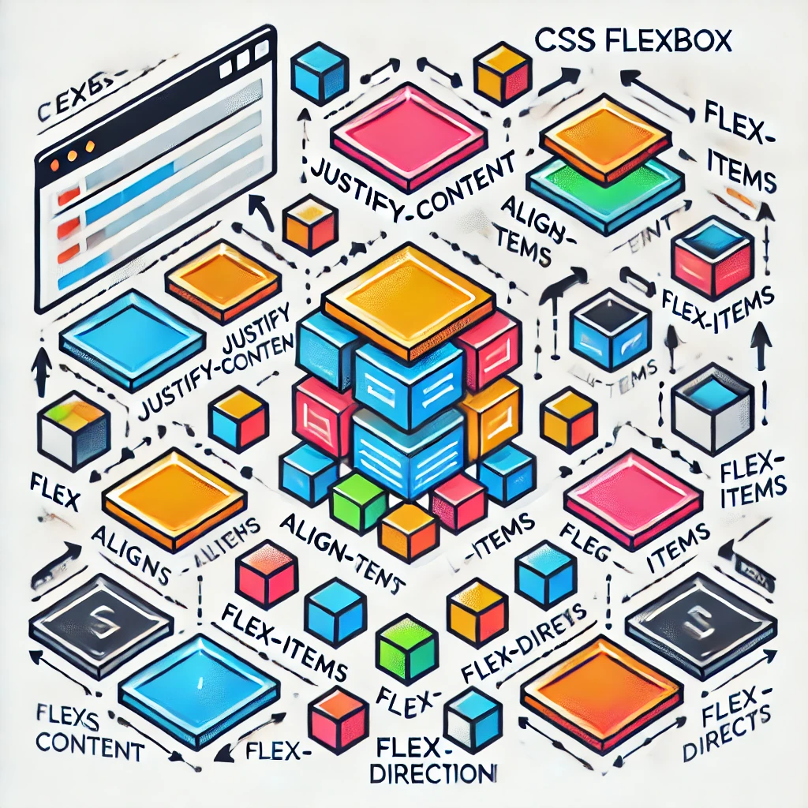

Semantic HTML enhances web development by improving accessibility, SEO, code readability, and maintainability.
It uses meaningful tags like <header>, <article>, and <footer>, which help assistive technologies
and search engines better understand your content. This leads to improved user experience, higher search engine rankings,
and easier code maintenance. Additionally, semantic tags provide a cleaner, more structured codebase, making collaboration with other developers smoother.
By ensuring consistency across browsers, Semantic HTML also helps future-proof your website for evolving web standards.
CSS Flexbox

Flex-box css properties.
CSS Flexbox, or "Flexible Box Layout," is a powerful one-dimensional layout model that simplifies responsive design
by aligning and distributing items within a container. Using properties like flex-direction to set horizontal or vertical layouts,
justify-content for main-axis alignment, and align-items for cross-axis alignment,
Flexbox provides flexibility in arranging elements. It enables items to grow, shrink,
and wrap based on the container's size, making it ideal for creating responsive navigation bars,
centered content, and adaptable grids. With simple properties like display: flex, Flexbox handles complex layouts
efficiently without the need for intricate CSS media queries.